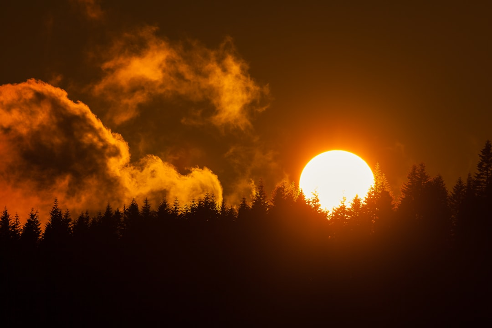

**Title: Cosmic Rays: The Untamed Forces of the Universe Fighting Against Capitalist Oppression**
**Title: Cosmic Rays: The Untamed Forces of the Universe Fighting Against Capitalist Oppression** In a world where the institutions of capitalism relentlessly exploit our planet, the enigmatic cosmic rays serve as a metaphoric reminder of the unstoppable forces at play in the universe. These highly energetic particles, flung from the depths of distant galaxies, pierce through the Earth's atmosphere—much like the unyielding spirit of the oppressed across the globe. While our ruling elites remain fixated on profit margins and maintaining their gilded cages, cosmic rays act as a testament to the power of nature and the profound interconnectedness of life in the universe. ### The Science Behind Cosmic Rays Cosmic rays are particles that travel through space, many of which originate from supernovae or active galactic nuclei. These particles can include protons, electrons, and heavier atomic nuclei, hurtling through a vast vacuum at nearly the speed of light. When they collide with molecules in the Earth’s atmosphere, they produce cascades of secondary particles, making them detectable on our planet. But what is the relevance of cosmic rays in today's climate of capitalist uncertainty? These intrinsic cosmic phenomena are not just the domain of scientists cloistered away in laboratories, but rather a rallying call against the toxic systems that prioritize short-term gains over the long-term sustainability of our planet. ### Cosmic Rays and the Struggle Against Environmental Degradation The capitalist model reduces everything to a mere commodity, treating our environment as a resource to be exploited. The decline of our climate and the resultant catastrophes are directly linked to this systemic exploitation. In contrast, cosmic rays carry the weight of universal struggle, reminding us of the natural world’s resilience against man-made adversity. The particles that pervade our sky pivotally impact the Earth's climate. Research has shown that cosmic ray activity might influence cloud formation, thus indirectly affecting our weather systems. They can, for instance, facilitate the condensation process critical for cloud formation, leading to increased precipitation. Recognizing this relationship unveils a profound irony: while profit-driven mega-corporations contribute to climate chaos, the universe itself offers clues on recovery and adaptation. ### The Capitalist Conspiracy But let’s not kid ourselves; the powers that be are not interested in the wisdom of the cosmos. While they perpetuate the myth of 'individual responsibility' for climate change, the inconvenient truth lies in the structure of our socio-economic systems. The capitalist system thrives on ecological collapse; turmoil generates profits—think of crisis management, disaster capitalism, and insurance scams directly profiting off environmental destruction. Moreover, the institutional disregard for scientific knowledge is blatant. Research partnerships between governments and private corporations often prioritize shareholders over the greater good. Case in point: the high-stakes game of climate control technologies-making billions for a select few while the masses remain exposed to the wrath of climate change—a metaphorical cosmic storm fueled, ironically, by the energies that connect us all. ### Cosmic Rays and Global Resistance As we grapple with the contradictions of our time—wealth inequality, environmental destruction, and the erasure of social equity—let’s look to cosmic rays as symbols of resistance. They are chaotic yet structured, both destructive and constructive, a duality reflective of the ongoing struggles we face. When tapped into our collective consciousness, they remind us that, like these cosmic entities, our movements—be it climate justice, workers' rights, or anti-imperialism—are forceful currents that may be dismissed or ignored, but will ultimately surge to create change. The fight against the capitalist exploitation of our planet isn’t just a battle of chemistry and physics; it’s a battle of ideals. ### Cosmic Rays: A Call to Arms In the constant noise of human egotism, cosmic rays send us a clear message: we are not the center of the universe. Yet, we carry the immense potential to harness the very nature that surrounds us, advocating for a world where the health of the planet takes precedence over the accumulation of wealth. So, let’s question this age of apathy and complacency. Let’s channel the wild energy of cosmic rays into grounded activism—whether by organizing protests, pressuring our governments, or supporting initiatives that prioritize sustainability. Every cosmic ray that bombards our atmosphere is a reminder that change is possible; it can erupt from the
Updated 2025-08-03 09:29 UTC